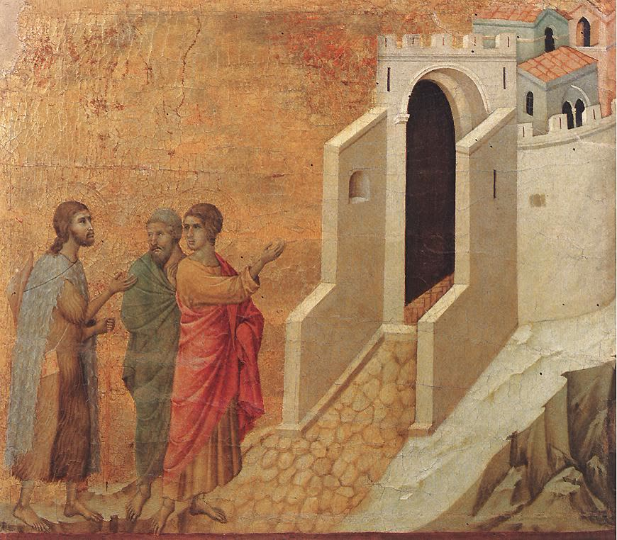
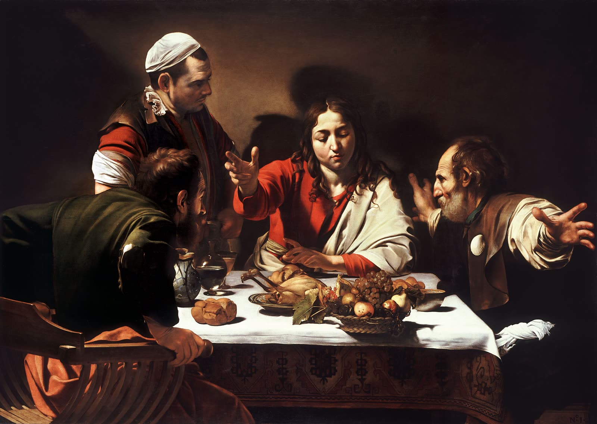
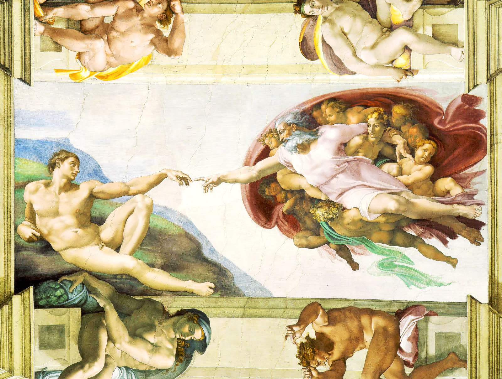
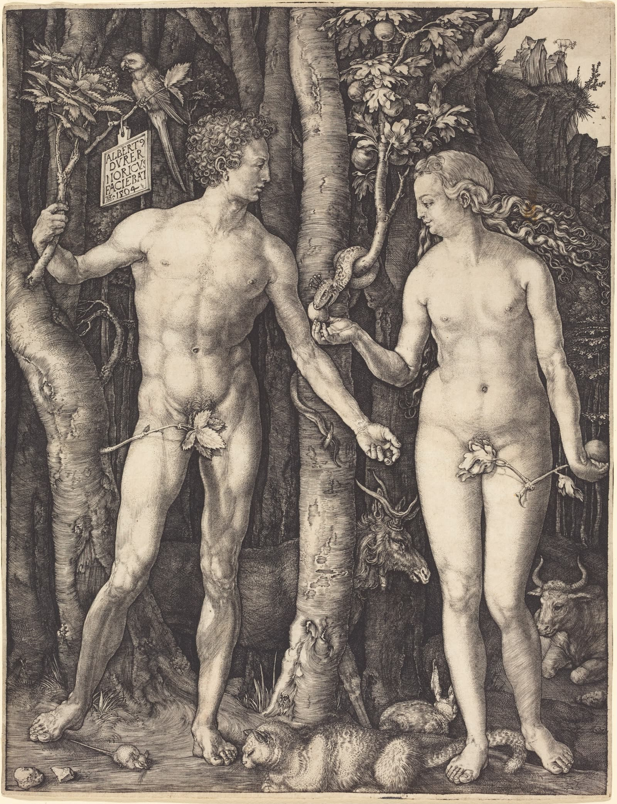
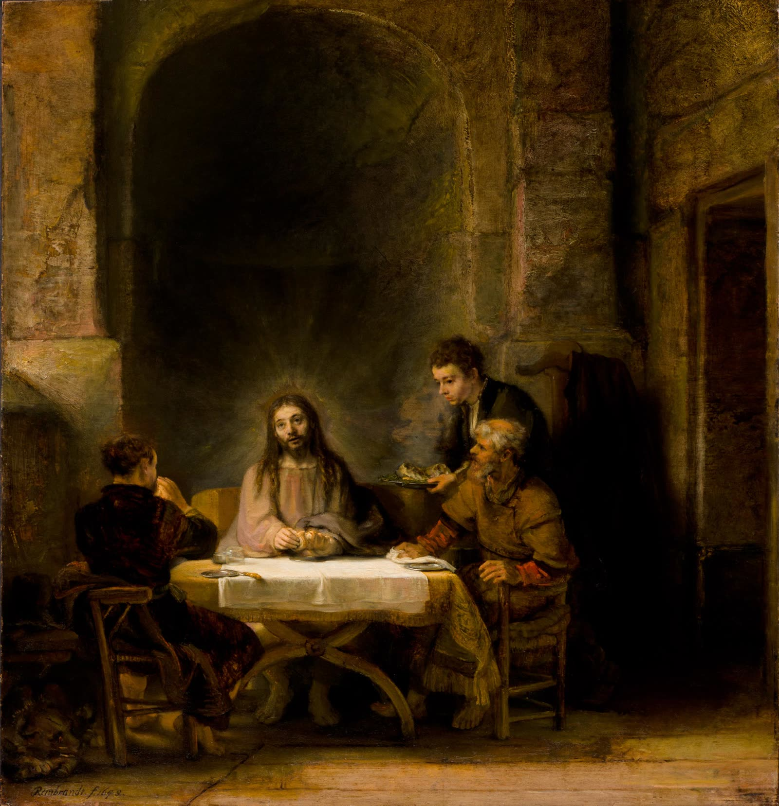
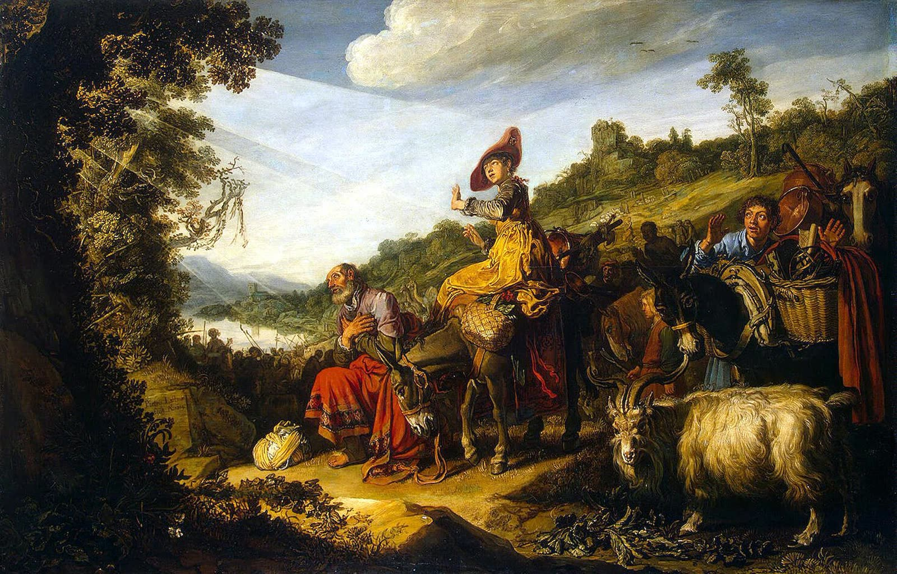

1. 우리는 성경을 어떻게 읽고 있을까요?
우리는 오랫동안 성경을 읽어 왔습니다.
성경에는 아담과 하와, 노아, 아브라함, 모세, 다윗과 같은 수많은 인물이 등장합니다. 하나님의 놀라운 기적도 있고, 전쟁과 실패의 역사도 있으며, 지혜로운 교훈과 아름다운 시도 있습니다.
그런데 이런 질문을 해 보신 적이 있습니까?
“이 수많은 이야기는 서로 어떤 관계가 있을까요?”
창세기와 출애굽기는 어떻게 연결될까요? 다윗의 이야기가 예수님의 이야기와는 어떤 관계가 있을까요? 구약성경을 읽는 것이 오늘 예수님을 믿는 우리에게 왜 중요할까요?
이 질문에 답하려면 성경을 읽는 눈이 달라져야 합니다. 우리는 성경의 개별 이야기만이 아니라 그 이야기들을 하나로 연결하는 커다란 흐름을 발견해야 합니다.
2. 성경은 많은 책이면서 하나의 이야기입니다
성경은 66권으로 이루어져 있습니다. 기록된 시대도 다르고, 기록자도 다양하며, 역사·율법·시·예언·복음서·서신 등 여러 문학 형식을 포함하고 있습니다.
그런데 그 다양성 속에는 하나님의 창조와 인간의 타락, 하나님의 약속과 구원, 예수 그리스도를 통한 구원의 성취, 그리고 새 창조에 이르는 큰 흐름이 있습니다.
성경을 이해하려면 두 가지를 함께 보아야 합니다.
첫째, 각 성경책이 원래 무엇을 말하는지 살펴야 합니다.
둘째, 그 말씀이 성경 전체의 구원 이야기에서 어떤 위치에 있는지 살펴야 합니다.
개별 본문의 고유한 의미를 무시해서도 안 되고, 전체 이야기와 분리해서도 안 됩니다.
3. 예수님은 성경을 어떻게 읽으셨을까요?
누가복음 24장에는 부활하신 예수님과 엠마오로 향하는 두 제자의 만남이 기록되어 있습니다. 제자들은 예수님의 십자가 죽음으로 인해 실망하고 혼란스러워했습니다. 그들이 기대했던 메시아의 모습과 실제로 일어난 사건이 달랐기 때문입니다.
예수님은 그들에게 성경을 풀어 설명해 주셨습니다. 누가복음 24:27은 예수님께서 모세와 모든 선지자의 글로 시작하여 성경이 자신에 관하여 증언하는 내용을 설명하셨다고 기록합니다.
제자들에게 필요했던 것은 새로운 사건을 더 많이 아는 것이 아니라, 이미 알고 있던 성경을 올바르게 이해하는 것이었습니다.
예수님은 제자들이 하나님의 구원 계획 안에서 메시아의 고난과 영광을 이해하도록 도우셨습니다.
그러므로 그리스도 중심으로 성경을 읽는다는 것은 모든 구절에서 예수님의 이름을 억지로 찾아내는 것이 아닙니다. 각 본문의 본래 의미를 존중하면서, 성경 전체가 예수 그리스도의 구원 사역을 어떻게 증언하는지 발견하는 것입니다.
4. 마침내 알아보다

눈앞에 계신 예수님을 알아보지 못했던 제자들이 마침내 부활하신 주님을 발견합니다. 성경을 읽는다는 것은 익숙한 말씀 속에서 미처 깨닫지 못했던 하나님의 뜻을 발견하는 과정이기도 합니다.
5. 성경의 큰 이야기를 살펴봅시다
성경 전체의 흐름을 다섯 가지 주제로 정리할 수 있습니다.
| 큰 흐름 | 주요 내용 | 대표 본문 |
|---|---|---|
| 창조 | 하나님이 세상을 창조하셨습니다. | 창세기 1–2장 |
| 타락 | 인간의 죄로 하나님과의 관계가 깨어졌습니다. | 창세기 3장 |
| 약속 | 하나님이 아브라함을 부르시고 복을 약속하셨습니다. | 창세기 12:1–3 |
| 구원 | 하나님이 예수 그리스도를 통해 구원의 약속을 성취하십니다. | 누가복음 24:44–47 |
| 새 창조 | 하나님이 만물을 새롭게 하십니다. | 요한계시록 21–22장 |
이것은 성경의 다양한 내용을 이해하기 위한 하나의 큰 지도입니다. 성경의 모든 장면을 이 다섯 항목에 기계적으로 끼워 맞추어서는 안 됩니다. 그러나 이 지도를 기억하면 각 본문이 하나님의 구원 이야기에서 어디에 위치하는지 생각하는 데 도움이 됩니다.
6. 예술로 보는 성경의 시작: 창조와 타락


7. 함께 성경 읽기: 누가복음 24:13–35
이제 본문을 직접 읽어 보겠습니다.
첫 번째 읽기: 이야기의 흐름을 살펴보십시오. 다음 네 장면을 찾아보십시오.
- 두 제자가 엠마오로 가는 장면
- 예수님께서 제자들과 대화하시는 장면
- 예수님께서 성경을 풀어 주시는 장면
- 제자들이 예수님을 알아보고 예루살렘으로 돌아가는 장면
두 번째 읽기: 질문에 답해 보십시오.
- 두 제자는 무엇 때문에 낙심하고 있었습니까?
- 예수님은 그들의 잘못된 이해를 어떻게 바로잡으셨습니까?
- 제자들의 이해가 달라지는 과정에서 성경 설명은 어떤 역할을 했습니까?
- 제자들은 예수님을 알아본 후 어떤 행동을 했습니까?
8. 오늘 배운 것을 정리합니다
오늘 우리는 성경을 읽을 때 세 가지 사실을 기억해야 한다는 것을 배웠습니다.
하나, 성경의 개별 이야기는 각각의 의미를 가지고 있습니다.
둘, 그 이야기들은 하나님의 구원 역사라는 큰 흐름 안에서 읽어야 합니다.
셋, 성경 전체는 예수 그리스도를 통한 하나님의 구원 계획을 증언합니다.
성경을 잘 읽는 사람은 성경에 관한 정보를 많이 외우는 사람만을 의미하지 않습니다. 본문을 주의 깊게 살피고, 말씀의 의미를 이해하며, 그 말씀을 통해 하나님의 뜻을 분별하는 사람입니다.

9. 한 주간의 성경 읽기: 약속을 따라 걷다

이번 주에는 창세기 12:1–9을 세 번 읽어 보십시오. 첫 번째는 사건의 순서를 따라 읽습니다. 두 번째는 하나님께서 아브람에게 하신 말씀을 찾아보면서 읽습니다. 세 번째는 하나님께서 주신 약속이 아브람 개인을 넘어 누구에게까지 연결되는지 살펴보면서 읽습니다.
“이 본문에서 하나님은 무엇을 약속하시며, 그 약속은 성경 전체 이야기에서 어떤 의미를 가질까요?”
이번 주의 핵심 질문
다음 시간에는 성경 본문을 관찰하고 해석하는 방법을 배웁니다.
성경을 읽는다는 것은
흩어진 이야기들 속에서
하나님의 구원 역사를
발견하는 것입니다.